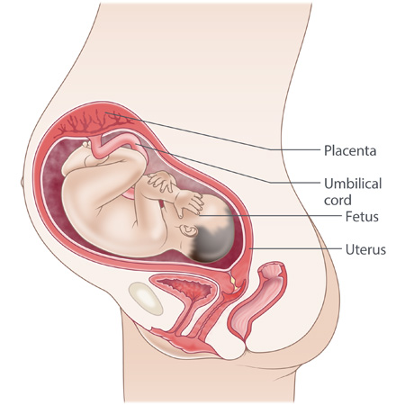

Week-by-week guide
First trimester
| 1 week | 5 weeks | 9 weeks |
| 2 weeks | 6 weeks | 10 weeks |
| 3 weeks | 7 weeks | 11 weeks |
| 4 weeks | 8 weeks | 12 weeks |
1 week
You're not actually pregnant at the moment. Instead, you have your period. It can be almost impossible to know exactly when your baby was conceived, so it is from the first day of this period that your pregnancy is calculated.
If you're hoping to fall pregnant, health professionals recommend that you:
- take folic acid: for 3+ months before your pregnancy and then the first 3 months once pregnant
- get immunised against rubella: the rubella, or German measles, virus can cause abnormalities in the newborn baby if a woman contracts it during the early stages of pregnancy; you may already be protected but if not, it's also best to avoid getting pregnant for one month after the vaccination
- speak to your GP:
- have a medical check if you have chronic health problems such as diabetes, epilepsy or high blood pressure
- discuss any hereditary diseases that might be in your family (your GP may also refer you to a genetic counsellor)
- check that any medications you're taking are safe during conception and pregnancy
- stop: smoking, taking any non-prescribed drugs and drinking alcohol
- reduce your caffeine intake: limit coffee, tea and other caffeine-containing products
- boost your health: eat a healthy, well-balanced diet, full of vitamins and minerals and be physically active
Other things to consider before pregnancy are your:
- home and housing situation
- money situation
- work leave entitlements
- transport options
- partner's thoughts (if you have one) on pregnancy
- child care options
Adapted with permission from the Raising Children website, Australia's trusted parenting website.
2 weeks
Now that your period is finished, one of your ovaries is preparing to release an egg.
Your ovaries are also producing lots of oestrogen, which starts off some important processes:
- 'fertile mucus'(often like egg-white) is produced in your fallopian tubes and cervix - this helps protect any sperm along its way
- your uterus starts growing endometrium, a new lining, to nurture a fertilised egg
By the end of this week, ovulation - the release of an egg from one of your ovaries - will happen.
If you have a 28-day menstrual cycle, ovulation usually happens around day 14. Having sex 1-3 days before ovulation (or around days 11-13 of your 28-day cycle) will make it more likely you will fall pregnant.
Adapted with permission from the Raising Children website, Australia's trusted parenting website.
3 weeks
After ovulation, the egg (sometimes two, which, if fertilised, will become non-identical, or fraternal, twins) travels toward your uterus along your fallopian tube. If you've had sex, sperm will also be moving upwards through your cervix towards your uterus.
A sperm must burrow through the outer layers of your egg into the middle for conception to occur. This usually happens while your egg is still in the fallopian tube. If this happens, you're pregnant.
The level of progesterone in your blood will now increase. This lets your body know you're pregnant and causes the endometrium to boost its nutrient supply, which prevents your next period from happening.
Adapted with permission from the Raising Children website, Australia's trusted parenting website.
4 weeks
The fertilised egg will continue along your fallopian tube to your uterus and implant itself into the endometrium - this can take 3-10 days. Some women experience a small amount of bleeding (spotting) around the time of implantation.
By the end of this week you'll probably have missed your period and might wonder if you're pregnant, even though you might not notice any changes in your body such as tiredness or sore breasts.
Your baby
As soon as conception occurs, the blastocyst (fertilised egg) starts dividing. By the end of this week, it's already become a ball of about 200 cells and is about 4-5mm across.
Inside there are three layers forming, each of which will make up a unique part of your baby's body:
- ectoderm - nervous system, brain, skin and hair
- endoderm - gut and other internal organs
- mesoderm - skeleton, muscles and blood systems
The outside of the blastocyst divides into two parts which form critical support structures for your growing baby:
- outside part - sends out chorionic villi (little tentacles) which bury into the endometrium and will develop into the placenta
- inside part - becomes the amniotic sac - the bubble filled with fluid which protects the growing embryo
If, during the very early stage of the cell division process, the fertilised egg divides into two and starts forming two babies, identical (or monozygotic) twins will form. They are both from the same egg and same sperm, so have the same genes and will be the same gender.
Adapted with permission from the Raising Children website, Australia's trusted parenting website.
5 weeks
If you've been sexually active and you still haven't had your period, it might be time to take a pregnancy test. These tests measure the amount of a hormone produced by the placenta - human chorionic gonadotropin (HCG). They all work in different ways, so make sure you follow the instructions carefully.
A positive pregnancy test
For many women, a positive pregnancy test can be cause for celebration. But for others, it might come as a complete surprise or shock. Even if you were planning a pregnancy, a positive result may bring up mixed emotions - get support here.
Some of the things that can affect your reaction to a positive result:
- whether the pregnancy was planned or not
- your relationship situation
- the time it took you to fall pregnant
- any previous pregnancy experience (e.g. miscarriages, stillbirths or difficult pregnancies)
- the amount of support you can expect with raising a child
- any pressure you've felt from your partner/family/friends to have children
- any medical assistance you've had (e.g. IVF)
Signs of early pregnancy
You might be experiencing some signs of early pregnancy this week, such as:
- being more tired than usual
- nausea or vomiting
- needing to go to the toilet more often, especially at night
- tenderness in your breasts
Morning sickness affects women in different ways - some don't get it at all but others can have it all day. It usually occurs from 4-12 weeks but can last for the entire pregnancy, with hormone and blood pressure changes thought to be the cause. Some ways to manage nausea.
Although it doesn't usually harm the woman or the baby, about 1% of women get it so severely that they can't keep any food or fluids down (called hyperemesis gravidarum). If this sounds like you, please see your GP.
Your baby
Your baby is now called an embryo. By the end of this week, it's about 2.5mm long from head to tail and its brain, spinal column and brain have all started to form.
Adapted with permission from the Raising Children website, Australia's trusted parenting website.
6 weeks
You might find that your sense of smell and taste are stronger and even ordinary smells and tastes might make you feel sick. Dizzy spells can happen too, so make sure you sit down if you start feeling faint.
If you have any cramping or bleeding, make sure you call your GP or midwife.
Starting pregnancy care
It's important to see your GP or midwife to get your pregnancy care started if you have just found out, or even think that you might be pregnant.
Your GP/midwife will:
- check your health
- organise some routine tests (including a blood test)
- discuss pregnancy care options with you
- refer you to various health professionals who you'd like to care for you, or the place where you would prefer to give birth
Looking after yourself (and your baby)
Although many women don't realise they're pregnant at this point in time, it's also a very important for your baby's development.
It's a good idea to:
- ask your GP or midwife if any medications you take are safe for your baby
- start making any lifestyle changes you need to, like cutting down on caffeine, quitting smoking, alcohol or any other drugs you might take - your GP can give you advice
- make sure you're eating healthily (including avoiding any foods that can harm your baby or make you sick), and taking folic acid
You might also like to find out more on how to prepare yourself for having a baby.
Your baby
Your baby is now about 5mm from head to tail and looks a bit like a tadpole.
Other key developments:
- small buds that will become your baby's arms and legs are starting to appear at the top and bottom of the embryo
- your baby's heart is beating quickly and rhythmically - this started about 24 days after conception
- the neural tube closes over your baby's brain and the bottom of your baby's spinal cord
Adapted with permission from the Raising Children website, Australia's trusted parenting website.
7 weeks
By 7 weeks you might notice changes with your:
- skin: for some women it's glowing, but others get pimples - all you can do is cleanse regularly, avoid using make-up, eat healthily and drink lots of water
- breasts: they might be tender and/or bigger, and your nipples might be more bumpy and browner; you may need to get fitted for a bigger (or maternity) bra
- bowel habits: constipation can be quite common; eating more high-fibre foods (e.g. fruit, vegetables and wholegrains) along with lots of extra water, can help
- energy levels: although many women feel full of energy and keep doing all the things they normally would, it's quite common to feel really tired and to need more sleep than usual - try to get to bed earlier at night
Your baby
The embryo has doubled since last week and is now about 1cm (10mm) from head to tail - around the size of a coffee bean.
Other key developments:
- internal organs such as the stomach, bowel, lungs and kidneys, are beginning to take shape
- the face is forming around the mouth - large eyes, a wide forehead and ear buds; inside, the brain is developing
- the end of the arm buds are starting to develop into hands
Adapted with permission from the Raising Children website, Australia's trusted parenting website.
8 weeks
Your hormones are buzzing by now! As a result, you might feel:
- quite sick, as nausea often peaks about now - tips on managing morning sickness
- feel full of energy
- more emotional than normal - happy or grumpy at the flick of a switch
Your uterus has now reached the size of a tennis ball and is putting pressure on your bladder, which can make you feel like you need to go to the toilet more often.
Early ultrasound
Sometimes your GP or midwife might recommend that you get an ultrasound to work out the baby's age and due date, as well as check the baby's heartbeat. This is more likely if you've had a previous ectopic pregnancy or miscarriage, or are just not sure when you became pregnant.
Your baby
The embryo is now about 1.2cm from head to tail.
Other key developments:
- the face is taking shape - the nose is starting to show, eyes have formed under a layer of skin, the inner ear and tongue are developing and the upper jaw and mouth roof have come together
- reproductive organs are beginning to form (but it's still too early to tell whether your baby is a boy or a girl)
- the tail is getting smaller and will eventually disappear
- webbed fingers are taking shape
Adapted with permission from the Raising Children website, Australia's trusted parenting website.
9 weeks
You might have started to put on some weight by now but most women still won't have an obvious baby bump.
Nausea peaks around this time and you also might find yourself battling headaches (which is quite common). It's fine to take paracetamol according to the instructions on the packet if you need to.
Dental infections are also more common during pregnancy, so make sure you look after your teeth and gums - floss and brush your teeth regularly. You might also like to get a check-up with your dentist.
You may or may not yet have been given some exercises to strengthen your pelvic floor - the group of muscles and ligaments that support your uterus, bladder and bowel. Even if you are yet to be given these, it's never too early to start doing them daily to prevent urinary problems later in your pregnancy and/or after the birth as well as help with your labour and recovery after childbirth.
And remember that you can always speak with your GP or midwife if there are problems or any changes that are really getting to you.
Your baby
The embryo is now about 1.7cm from head to tail.
Other key developments:
- the head looks more baby-like now but is still oversized compared with the bodytogether
- facial features have more definition and the internal structures of the ear are developing but will not work until around 24 weeks
- tiny blood vessels can be seen underneath the transparent skin and the skeleton is forming
- the arms are legs are longer and look almost as if your baby is giving itself a hug!
- the placenta and umbilical cord are developing
Adapted with permission from the Raising Children website, Australia's trusted parenting website.
10 weeks
You might find that you're feeling more hot, hungry, vulnerable, tired, emotional and moody than usual - all of this is normal!
Eating healthily and getting active can help - unless you've been advised otherwise by your GP or midwife, it is recommended that you do 30 minutes of moderate exercise on most days of the week, even if you were not active before your pregnancy.
Your sex drive might have changed too - some women find pregnancy increases it whilst others can feel less attractive and/or lose interest in sex. Try to be open and honest about how you're feeling with people you know you can trust to avoid hurting any feelings.
If you choose to have a CVS (chorlonic villus sampling) to check for genetic conditions such as Down syndrome, it can be done from now until 14 weeks of pregnancy.
Your baby
Your baby is now called a foetus. It's now about 3.5cm long from head to bottom (the tail has disappeared) and weighs about 8g.
Other key developments:
- all organs are formed (but most don't work yet), the heart has four separate chambers and even though the internal parts of the sex organs are finished, the external parts can't be seen yet
- elbows, wrists, knees and ankles are all developing but the bones are all very soft
- webbing between the toes and fingers has now gone
Adapted with permission from the Raising Children website, Australia's trusted parenting website.
11 weeks
If you've been suffering with morning sickness, the good news is that it often starts to settle down after this point!
Have you had cramps in your legs or feet? This is actually quite common but eating lots of calcium-rich foods (think milk, yoghurt, cheese and tinned fish with edible bones) and getting active can help. You might like to see a dietitian if you have special dietary needs.

12 week scan
Even though you're only 11 weeks pregnant, you can choose to have your first ultrasound from 11-13 weeks.
You will need to give your permission to have this scan, just like with all other tests or scans during your pregnancy. It's important that you always ask your GP or midwife for more information about any test (or treatments/medications) you are unsure about, or why they're needed, including what might happen if you decide not to have them.
The 12 week scan can be an exciting moment as it's usually when you get to see your baby (or babies!) for the first time! Seeing your baby and hearing their heartbeat can also help make the pregnancy feel real for your partner.
Exciting as it can be, keep in mind that this scan is also done to check on your baby's development and screen for conditions like Down syndrome. Before having the scan, it's a good idea to think about (and discuss with your partner or another trusted person) how you'd feel, and what you might do, if the scan shows that things are not going as planned with your baby. Find additional support here.
Your baby
Your baby is now about 4.5cm long from head to bottom, weighs about 10g and is ready for a growth spurt!
Other key developments:
- the heart is finished and pumping
- fingernails are growing
- the brain and nervous system have almost finished developing and are starting to work with the muscles, which means your baby can start making small movements (but you can't feel this yet)
Adapted with permission from the Raising Children website, Australia's trusted parenting website.
12 weeks
Many women have their first pregnancy care visit with a midwife., GP or obstetrician about this time.
Because your uterus moves upwards about now, some of the pressure is taken off your bladder, which means you probably won't need to go to the toilet as often (at least for a little while).
You might find that you seem to have a little more energy now but some women will still feel quite sluggish. Try to keep up those exercises to strengthen your pelvic floor though!
Have you noticed any unusual brown patches or marks? Don't stress if you have! Brown patches on your face/neck are called 'chloasma'- the 'mask of pregnancy'and a brown line which runs from your pubic area up to your belly button or higher - linea nigra - might start to show about now. They can also start showing much later in your pregnancy, or not at all - this is all normal.
Antenatal appointments
Now that your pregnancy is well under way, you have probably noticed that there can be a lot of appointments to attend! Going to all of your antenatal appointments, right from the start, is important because:
- it's a chance for a health professional to check on your and your baby's health
- if there's a problem, it can usually be picked up and treated, or checked
- you can ask any questions or talk about any worries you might have
Your baby eats and drinks the same foods and drinks as you
By now the placenta and umbilical cord are working - nutrients and oxygen pass into your baby and any waste products are removed. This means that most of what you eat, drink, take (e.g. medicines) and breathe (e.g. cigarette smoke, even if not your own), pass through into your baby.
This is why it's so important to:
- make sure you're eating healthily, as well as avoiding any foods that can harm your baby or make you sick
- quit:
- not take in too much caffeine - limit coffee, tea and other caffeine-containing products
- check with your GP or midwife that any medicines (including supplements and other over-the-counter medications) you take, are safe for your baby
Making lifestyle changes can seem hard but you don't have to do it on your own - your GP or midwife can always give you advice.
Your baby
Your baby is now about 6cm long from head to bottom and weighs about 18g.
Other key developments:
- twenty teeth have developed within your baby's gums
- the kidneys are working, allowing your baby to swallow amniotic fluid and wee, and the digestive system is being tested
- your baby's chest is practising breathing movements - rising and falling
Adapted with permission from the Raising Children website, Australia's trusted parenting website.
Second trimester
| 13 weeks | 18 weeks | 23 weeks |
| 14 weeks | 19 weeks | 24 weeks |
| 15 weeks | 20 weeks | 25 weeks |
| 16 weeks | 21 weeks | 26 weeks |
| 17 weeks | 22 weeks | 27 weeks |
13 weeks
Welcome to the second trimester!
A few things that you might have noticed:
- your baby bump might be starting to show
- veins in your breasts are easier to see
- a stretching feeling around your tummy and groin - these are the ligaments that hold your uterus in place starting to stretch
Have you just discovered (or do you think) that you are pregnant? If so, please see your GP or midwife straight away so you can get your pregnancy care and antenatal appointments started.

Telling others about your pregnancy
Because the risk of miscarriage is much less by now, a lot of women start sharing their news with others around this time, with many choosing to do this via Facebook or other social media. Telling others about your pregnancy can suddenly make it feel more real to you as well - find out more on how to prepare yourself for having a baby
Before you tell others about your pregnancy, it's a good idea to:
- talk with your partner about how and when you will share your news to help avoid:
- hurting any feelings
- causing any disagreements
- having excited family/friends spreading your news for you!
- be prepared for all different types of reactions to your pregnancy news from others
If you are working, you might also like to:
- check if your contract/agreement has any requirements specific to pregnancy
- think about how you will tell your employer, especially if they are likely to find out by word of mouth when you announce your pregnancy to others - keep in mind that you don't have to let your employer know at a specific time but if you plan on taking maternity leave, you need to give 10 weeks'notice
- make time to speak with your employer about parental leave, including when you can start, how much leave you can take, when you might come back and if there might be any changes to your role when you do
Your baby
Your baby is now about 7.5cm long from head to bottom and weighs about 30g.
Other key developments:
- the pancreas and liver have started working and the vocal cords are developing
- your baby's bones are getting harder and hair is growing on your baby's head and eyebrows
Adapted with permission from the Raising Children website, Australia's trusted parenting website.
14 weeks
A lot of women find that 14 weeks is the most energetic time of their pregnancy, as well as being the most comfortable. Because morning sickness usually settles down now too, it's an ideal time to make sure you're being physically active and doing your pelvic floor exercises every day.
Physical activity during pregnancy:
- can help you feel better by improving your mood, fitness, sleep, energy levels and by easing any back pain you might have
- might reduce your risk of gaining too much weight, developing gestational diabetes or pre-eclampsia, especially when also eating healthily
- helps keep you strong for childbirth
Unless you've been advised otherwise by your GP or midwife, it is recommended that you do 30 minutes of moderate exercise on most days of the week, even if you were not active before your pregnancy. Read more about getting active during pregnancy.
Some other changes going on:
- your baby bump should 'pop out'at any time - if it hasn't already!
- small skin 'tags'might appear, usually underneath your breasts - they're nothing to worry about but if they bother you, speak to your GP or midwife
- your breasts are starting to make colostrum. You might like to start reading up about breastfeeding. Use our breastfeeding goals tool to think about how long you might breastfeed for and get some great tips!
Your baby
Your baby is now about 8.5cm long from head to bottom and weighs about 45g.
Other key developments:
- your baby is looking more baby-like - the face is more recognisable now and the neck is longer
- reflexes are working - if you could touch your baby's feet or hands, they would curl or close
Adapted with permission from the Raising Children website, Australia's trusted parenting website.
15 weeks
By 15 weeks, you might have noticed your nails growing faster and your hair getting thicker. People may also have commented that you have the pregnancy 'glow'. This is because your body is pumping around about 20% more blood than usual!
Pumping around all of this extra blood makes your heart work harder and can cause:
- nose and gum bleeds
- higher or lower blood pressure
- headaches
If you choose to have an amniocentesis to test for genetic conditions such as Down syndrome, it can be done from around now.
Have you been thinking more about your family?
It's common during pregnancy to reflect on your upbringing, the role your own parents played and what sort of parent you might make. Even though pregnancy can bring some families closer together, stirring up memories can also raise a range of strong (and possibly painful) feelings and reactions, depending on where your family are now and what experiences you've had in the past.
If you find yourself in this position, it's a good idea to discuss your feelings at an antenatal appointment or speak with someone you trust, such as a friend, your GP or midwife, or access Lifeline for confidential support online or via telephone.
Your baby
Your baby is now gaining weight rapidly - they now measure about 9.5cm long from head to bottom and now weighs about 80g!
Other key developments:
- lanugo, a fine covering of hair, is starting to grow all over your baby's body
- the growth of your baby's body is now faster than its head
- your baby might suck its thumb
Adapted with permission from the Raising Children website, Australia's trusted parenting website.
16 weeks
If you've felt something like butterflies in your tummy, you might have started feeling some of your baby's movements! But don't worry if you haven't felt anything yet, many women don't start feeling movements until around 18-22 weeks, especially if it's their first.
Struggling to break habits or just found out you're pregnant?
Because the placenta and umbilical cord pass nutrients and oxygen into your baby and remove any waste products, most of what you eat, drink, take (e.g. medicines) and breathe (e.g. cigarette smoke, even if not your own), pass through into your baby.
This is why it's so important to:
- make sure you're eating healthily, as well as avoiding any foods that can harm your baby or make you sick
- quit:
- not take in too much caffeine - limit coffee, tea and other caffeine-containing products
- check with your GP or midwife that any medicines (including supplements and other over-the-counter medications) you take, are safe for your baby
Making lifestyle changes can seem hard but you don't have to do it on your own - your GP or midwife can always give you advice.
Your baby
Your baby is now about 11.5cm long from head to bottom and weighs about 110g.
Other key developments:
- the umbilical cord, which usually contains two arteries and one vein, is now completely mature
- your baby is protected by around 180mL of amniotic fluid
- all of the joints are working, fingers and toes are moving and toenails are forming
- your baby can make facial expressions and even though the eyes are still sealed, they're sensitive to light
Adapted with permission from the Raising Children website, Australia's trusted parenting website.
17 weeks
By now, people are probably starting to notice that you're pregnant, so it might be time to start getting some pregnancy bras, looser clothing or maternity clothes.
You might also have noticed that you have more vaginal discharge than normal, so using panty liners or sanitary pads might be helpful. If the discharge smells bad or changes colour though, please see your GP or midwife.
Pregnancy weight gain
There are lots of things that can influence how much weight you should gain during your pregnancy (and at what stage). You might also have found that some people have been encouraging you to eat more than normal because 'you're eating for two now', but did you know that this is actually a myth? It's not how much you eat, but the quality of what you eat, that is more important. Read more about healthy eating during pregnancy and weight gain during pregnancy.
20 week ultrasound
Your GP or midwife will offer you an ultrasound at 18-20 weeks to check the position of the placenta, your baby's body parts and their overall development. Your baby will look like a real baby this time, so it's a pretty exciting time! But it's also a good idea to think about (and discuss with your partner or another trusted person) how you'd feel, and what you might do, if the scan shows that things are not going as planned with your baby. Find additional support here.
Your baby
Your baby is about 13cm long from head to bottom and weighs about 150g, which might now be heavier than the placenta.
Other key developments:
- your baby's external sex organs are now completed formed
- loud noises might cause your baby to startle
- the taste buds are functional and your baby can tell the difference between bitter and sweet. Try to eat healthily as babies start developing taste preferences while they're still in the womb!
- your baby wees almost every hour now and will take in some urine (which is sterile) when they swallow the amniotic fluid - this is normal
Adapted with permission from the Raising Children website, Australia's trusted parenting website.
18 weeks
Have you felt something like butterflies in your tummy yet? If so, you might have started to feel some of your baby's movements! Don't stress if you haven't felt anything yet though, it might still be a few weeks.
How are you going with your pelvic floor exercises? Try to make these a part of your daily routine to prevent urinary problems later in your pregnancy and/or after the birth, as well as help with your labour and recovery after childbirth.
Emotions
Pregnancy often brings all sorts of emotions to the surface. If you're finding that you're not enjoying life the way you used to, feeling down or have had depression in the past, it's best to tell your GP or midwife. There is always someone to talk to and plenty of support available, even if you're not sure anything is 'wrong', so don't be afraid to ask.
Eating healthily and getting active can also help. Unless your GP or midwife have advised you otherwise, try to do 30 minutes of moderate exercise on most days of the week, even if you were not active before your pregnancy.
Your relationship
You might find that you:
- feel like talking about the pregnancy more than your partner does
- have lost some of your sex drive
- need extra support and be feeling more tired and vulnerable than before
If you have a partner, talking about how you're feeling and the changes that might happen by bringing a baby into your lives is a good idea, even if you feel like you have a strong relationship. This open communication and working out of roles is good practice for staying connected when you are both parenting and can be as simple as discussing who does the housework and where the family income will come from.
If you don't already have children, now is a great time to spend time together as a couple, such as watching a movie, sleeping in, spending time with family and friends or going out for a meal. You might not have as much time to do these things when your baby first arrives, so try to value this couple time!
Your baby
Your baby now measures about 14cm long from head to bottom and weighs about 200g.
Other key developments:
- meconium - the black, sticky stuff that forms your baby's first poos - is starting to fill your baby's bowel
- your baby is probably keeping a different timetable to you - playing at night when you're sleeping and resting during the day when you're active
Adapted with permission from the Raising Children website, Australia's trusted parenting website.
19 weeks
By now, it might seem everything revolves around your pregnancy and you might find that other things in your life seem less important.
You might also be focused on the shape of your bump but just remember that it doesn't matter how big it is or isn't (or what other people say) - the only reliable guide is your baby's growth, which your health professional will feel and measure as you progress through your pregnancy.
Some other things you might notice:
- your feet: they might have swollen due to the extra fluid in your body, the extra weight you're carrying and because your ligaments are stretching - make sure you wear supportive shoes so you're comfortable and to prevent problems later on
- curves: perhaps not where you expected them! This might mean that you no longer fit into your favourite clothes, so you might want to get some maternity clothes, or at least looser fitting clothes - read more about what to expect from pregnancy weight gain
Many women find their pregnancy curves make them feel sexy but others find the physical changes hard to accept and this can interfere with your relationship if you have a partner. Don't be afraid to talk to someone, even if you're not sure anything is 'wrong'.

Your baby
Your baby now measures about 15cm long from head to bottom and weighs about 260g.
Other key developments:
- brown fat - which helps produce heat without shivering - is building up beneath your baby's skin
- your baby is likely to be awake for only 6 hours a day and asleep for 18 - just like a newborn
Adapted with permission from the Raising Children website, Australia's trusted parenting website.
20 weeks
You've reached the halfway mark of the average pregnancy!
Because your uterus is taking up more space, some of your other organs (like your lungs and heart) have less room, so you might feel a bit breathless, especially when lying flat on your back, but don't forget to keep doing your pelvic floor exercises every day!
If your hips are aching at night, try putting a pillow between your legs, or on one or both sides.
Have you asked your midwife if they support immediate skin-to-skin contact with your baby after birth? If they don't (and immediate skin-to-skin contact with your baby is something that you would like) this gives you some time to discuss this further with them and emphasise its importance to you.
20 week ultrasound
Your GP or midwife will offer you an ultrasound at 18-20 weeks to check the position of the placenta, your baby's body parts and their overall development. You'll probably see:
- your baby's face
- the curve of their spine
- their beating heart
- your baby's waving arms and kicking legs (those butterflies you've probably felt!)
If you want to know if you're having a boy or a girl, now is the time to ask.
Just keep in mind that as exciting as this scan is, it's also a good idea to think about (and discuss with your partner or another trusted person) how you'd feel, and what you might do, if the scan shows that things are not going as planned with your baby. Find additional support here.
Your baby
Your baby now measures about 16cm from head to bottom and weighs about 320g.
Other key developments:
- vernix is now covering your baby - this creamy, white substance protects your baby's skin from amniotic fluid
- your baby's fingerprints have formed and adult teeth have grown deep within your baby's gums, under the first teeth
- the heart is beating 120-160 beats per minute and the muscles are growing, which means your baby will be moving around a lot
- even though your baby's ears are not yet completely formed, they can hear sounds such as your heart beating or your voice
Adapted with permission from the Raising Children website, Australia's trusted parenting website.
21 weeks
Have you been getting some heartburn, indigestion or even just burping more often? This is because your uterus is now up at your belly button! Although this can reduce your appetite it's important that you keep eating - try having smaller, healthy meals more often.
Telling others
If you're working and you haven't yet told your workmates or employer, you might like to bring your pregnancy up with them soon, especially if your workplace will need to organise someone to cover your maternity leave. Don't worry, you can't lose your job for being pregnant - Australian laws protect against this.
It's a good idea to be prepared for all different types of reactions to your pregnancy news from others, particularly if you're the first one of your friends to become pregnant. Many people find that their friendship circles change when they have a baby; some friendships might drift away but others will probably start - all of this is OK. Find additional support here.
Your baby
Your baby now measures about 18cm from head to bottom and weighs about 390g.
Other key developments:
- the brain is growing but its surface is still smooth
- your baby's body is looking more in proportion now that your baby's legs have grown
Adapted with permission from the Raising Children website, Australia's trusted parenting website.
22 weeks
Your bump may be starting to show by now ...and you're probably quite excited! If you have any worries about your bump though, make sure you speak with your GP or midwife.
You might also be starting to experience some of the less pleasant side effects of pregnancy:
- aching hips - especially lying down at night
- backache
- constipation and haemorrhoids - some tips to manage this
- swollen ankles - usually by the end of the day
- foot and leg cramps
- varicose veins - especially if you tend to get them already
- stress - some stress during pregnancy is normal but if it is really bad or goes on for a long time, it can affect both you and your baby
Most of these problems can be managed quite well, so if any of these are bothering you, make sure you speak with your GP or midwife for advice. Find additional support here.
Antenatal classes
These classes go by lots of different names - childbirth education, prenatal classes, antenatal classes etc - they're all the same thing.
Antenatal classes:
- help you and your birth partner get ready for pregnancy, labour, birth, breastfeeding and parenting when your baby first arrives
- give you the chance to talk to an expert (usually a midwife) about any concerns or questions you might have
- are a great opportunity to meet other expectant parents
- tend to run on weeknights or sometimes on the weekend
There are also other private classes, such as hypnobirth, calm birth and active birth - you can look them up to see if they are available in your area if you're interested, or ask your GP or midwife.
Make sure you book into antenatal classes soon as they tend to fill up quickly - ask your GP or midwife for help booking in.
Your baby
Your baby now measures about 19cm from head to bottom and weighs about 460g.
Other key developments:
- the inner ear is now adult size and the retinas of your baby's eyes are full developed
- your baby moves around a lot and changes position all the time (there's still plenty of room to do so!) but your baby will probably prefer to lie across your tummy, or 'transverse'
Adapted with permission from the Raising Children website, Australia's trusted parenting website.
23 weeks
You can probably feel your baby moving by now - this can be both reassuring and exciting!
Other things going on:
- you probably need to go to the toilet more often because your uterus is putting pressure down onto your bladder again
- a mucus plug (later called 'a show') has probably sealed your cervix shut tightly

A few women may also start feeling Braxton Hicks contractions - 'practice'contractions that feel like a band of muscle tightening across the top of your belly - although it is more common to notice them closer to the end of the pregnancy when they tend to be stronger. Some woman will not feel Braxton Hicks contractions at all, even near the end of the pregnancy.
Your baby
Your baby now measures about 20cm from head to bottom and weighs about 540g.
Other key developments:
- the pancreas is making insulin
- your baby's eyebrow and head hair is starting to colour
- because the different parts of your baby's nervous system are now working together, your baby can now recognise sound, light and pain
- surfactant is being produced inside your baby's lungs - this helps them stay inflated when your baby breathes in
Adapted with permission from the Raising Children website, Australia's trusted parenting website.
24 weeks
If you place your hand on your belly, you might be able to feel your baby moving. As your baby continues to grow, you (and others) will actually be able to see your baby moving. In fact, near the end of your pregnancy, you might even be able to recognise some body parts!
It's quite common for people to make comments about your belly, or to touch/rub it, even if you haven't asked them to. If this makes you uncomfortable, make sure you tell people not to do this - it's your body!
You might find that others also start telling you about their own birth stories - ask them not to be negative though, as your experience of birth will be unique to you.
Gestational diabetes test
You might have a blood sugar test for gestational diabetes around 24-28 weeks. If you are at high risk of developing gestational diabetes or have had it during a previous pregnancy, it's likely you'll be offered this test earlier than now. Your GP or midwife can give you more information.
Planning for extra help
Even though it should still be a while before your baby arrives, having a plan for some support once your baby is born is a great idea. For example, could friends, family or others call by or phone to see how you're going, or perhaps help with some of the practical things, especially while you're still adjusting to your new role. Asking for help is OK - in fact, some people will actually enjoy being given specific task(s) to help you out!
Your baby
Your baby now measures about 21cm from head to bottom and weighs about 630g. If they were born now, they might survive. They would be considered extremely premature, need help to breathe and would need to spend a long time in a neonatal intensive care unit (NICU).
Other key developments:
- your baby might be hiccupping, which can feel like tiny waves of regular movements inside your belly
- even though a layer of fat is forming under your baby's skin, which makes it less see-through, the 'fattening up'process hasn't really started yet so your baby still looks thin
- your baby tends to move when you're trying to sleep (which means you can probably feel your baby moving more at night) and likes to sleep when you're awake (because your movements rock your baby to sleep)
Adapted with permission from the Raising Children website, Australia's trusted parenting website.
25 weeks
As your uterus expands upwards, you might find your ribs are feeling a bit uncomfortable and that you're starting to get some indigestion. It's important that you keep eating though! Try having smaller, healthy meals more often.
Have you booked into antenatal classes yet? If not, you might want to do that soon.
You might also want to ask your midwife about immediate skin-to-skin contact with your baby after birth if you haven't already.
Preparing
Getting your home ready to welcome your new baby is a great way to help you and your partner, as well as any other children you have, to prepare for your new baby's arrival. But this doesn't mean that you have to add extra rooms to your house or buy heaps of baby 'stuff'! Read more about rooming-in and preparing for your baby
Your baby
Your baby is now about 22.5cm long and weighs about 720g.
Other key developments:
- different parts of your baby's spine are forming
- your baby might move to the rsound of familiar music or voices and react to loud noises
Adapted with permission from the Raising Children website, Australia's trusted parenting website.
26 weeks
By now, you might:
- have backaches
- be experiencing Braxton Hicks contractions
- be having vivid dreams
You might also feel a bit clumsy and walk slightly differently. This is because your centre of gravity has changed with the baby weight you're gaining. Go easy on yourself as you learn to do and lift things differently to before!
How are you going with your pelvic floor exercises? Try to do these every day to prevent urinary problems and to help with your labour and recovery after childbirth.
Rhesus (Rh) type
Your Rh type is the + or - in your blood type (such as 'O positive'). If you don't know what yours is, it's important to find out because if you're Rh-negative and your baby happens to be Rh-positive (which is more common), this can cause serious health problems for your baby.
Your baby's blood type won't be known until after they're born, so if you're Rh-negative, you'll be offered an 'Anti-D'injection at your 26-28 week and 34-36 week visits, as well as if you have a bleed during pregnancy. These reduce the risk of health problems. Speak to your GP or midwife for more information.
Your baby
Your baby is now about 23cm long and weighs about 820g.
Other key developments:
- a lot fat and muscle are starting to grow from about now
- your baby can hear, taste and see - remember to keep eating healthily as babies start developing taste preferences based on what you eat, well before they're born!
- if you firmly rub your belly, your baby might move in response!
Adapted with permission from the Raising Children website, Australia's trusted parenting website.
27 weeks
You might have noticed your weight going up but because different women gain weight at different times and rates, it's best to speak with your GP or midwife to see what sort of weight gain is best for your pregnancy or check out our guide to pregnancy weight gain.
Just keep in mind that the old saying 'you need to eat for two'is actually a myth - what's more important is the quality of what you eat.
Whooping cough immunisation
Whooping cough is a highly contagious illness that is very dangerous for babies. You can help protect your baby by being immunised against whooping cough between 28 and 32 weeks. In fact, this immunisation is free in Australia for pregnant women in their third trimester. It is recommended that your partner is immunised too. You can ask your GP or midwife to organise this for you.
Breastfeeding
You probably know that breastfeeding is recommended for your baby but did you know it is actually a skill that takes time to learn?
You might not have thought much about whether or not you will breastfeed yet, but it's still a good idea to know what to expect from your body as it prepares to breastfeed your baby. You might also like to use our breastfeeding goals tool to start thinking about whether you will breastfeed your baby, and if so, for how long.
Your baby
Your baby is now about 24cm long and weighs about 920g, although your baby will be putting on lots more weight over the next month or so!
Other key developments:
- the brain is beginning to take more shape
- your baby's eyes can now open
Adapted with permission from the Raising Children website, Australia's trusted parenting website.
Third trimester
| 28 weeks | 33 weeks | 38 weeks |
| 29 weeks | 34 weeks | 39 weeks |
| 30 weeks | 35 weeks | 40 weeks |
| 31 weeks | 36 weeks | 41+ weeks (overdue) |
| 32 weeks | 37 weeks |
28 weeks
Welcome to the third trimester!
If you're still working, it might be time to think about when you will stop - lots of women stop around 34-36 weeks but it really depends on your job and how you're feeling.
You might find that you need (or want) to start taking things a bit easier if you can, especially if you start experiencing some of the health problems common in the third trimester. Some of these problems include:
- reflux and heartburn - try having smaller, healthy meals more often
- leg and lower back pain - try standing up straight and tilting your pelvis forward
- breathlessness - there is less room for your lungs because your uterus is pushing up further into your ribcage
- swollen feet and hands - try to put your feet up as much as you can, remove any tight rings or other tight jewellery (such as bangles) and keep drinking as much water as you feel you need to - if you have sudden swelling in your hands, face or feet though, see your GP or midwife as soon as possible
- leaky breasts - they are starting to produce colostrum - using breastpads can help with this
Feeling stressed or sad?
Some stress during pregnancy is normal but pregnancy also tends to bring up all sort of emotions, for both you and your partner. It's normal to have days where you or your partner feel down or grumpy but if these moods go on for longer than two weeks, make sure you tell your GP or midwife.
Don't forget that there is always someone to talk to and plenty of support available, so even if you're not sure anything is 'wrong', don't be afraid to reach out.
Eating healthily and getting active can also help with your mood, so unless your GP or midwife have advised you otherwise, try to get in about 30 minutes of moderate exercise on most days of the week, even if you were not active before your pregnancy.
Your baby
Your baby is now about 25cm long and weighs about 1kg.
Other key developments:
- now that your baby is getting bigger there is a lot less room to move around, which may make them favour the breech position (bottom down, head up) but don't stress, most babies will move to the head-down position before birth
- your baby's immune system is developing and the eyelashes are growing
- if you're having a boy, his testicles are now lowering into his scrotum
Adapted with permission from the Raising Children website, Australia's trusted parenting website.
29 weeks
Has anyone mentioned that you should avoid lying flat on your back? This is because there is a big vein - the vena cava - running down the right side of your back and lying flat on your back can make your uterus press down on it.
Instead, try sitting up slightly, lying on your side and using a pillow under your stomach and between your knees to make things more comfortable.
Have you (and your partner) had your whooping cough immunisation yet? In Australia, it's free for pregnant women in their third trimester. If you haven't had it yet, ask your GP or midwife to organise it for you.
Keeping active
You probably don't feel overly energetic but just as doing your pelvic floor exercises every day is important, regularly getting active is also still important and can help you prepare for, and recover from, giving birth. It might also lower your risk of gaining too much weight, developing gestational diabetes or pre-eclampsia, especially when also eating healthily.
If the increasing weight on your feet and legs is bothering you, perhaps try some water-based exercise such as swimming or aqua classes, but make sure you check with the instructor that the movements are suitable during pregnancy. Pregnancy Pilates or Yoga might also be worth trying.
Before starting anything new though, or if you are unsure about any exercises, it is best to check in with your GP or midwife. Read more about getting active during pregnancy.
Your baby
Your baby is now about 26cm long and weighs about 1.15kg. This rapid weight will continue between now and about 38 weeks.
Other key developments:
- your baby's bone marrow have started producing red blood cells
- almost all of your baby's organs are now functioning well
- your baby's chest is practising breathing movements more consistently now - a regular rhythm of in and out
Adapted with permission from the Raising Children website, Australia's trusted parenting website.
30 weeks
By 30 weeks, your:
- blood volume has doubled - which is why your blood pressure will now be checked at every antenatal appointment
- breasts might be getting bigger to prepare for breastfeeding
- reflux and heartburn might be getting worse because your baby is taking up more and more space - try having smaller, healthy meals more often
- sleep patterns might be disrupted - waking up in the middle of the night and not being able to get back to sleep is quite common ...and very tiring! Try squeezing in naps where you can, which is also good practice for when your baby arrives.
Car seat for your baby
Make sure you've organised an Australian Standards-approved rear-facing child restraint. If you'd prefer not to buy one, you might be able to hire one - ask your local shire or council about hire options.
It might seem early but it's best to be prepared just in case your baby is born early. Read more about baby equipment.
Adapted with permission from the Raising Children website, Australia's trusted parenting website.
Your baby
Your baby now measures about 27cm from head to bottom and weighs about 1.3kg.
Other key developments:
- if your baby was to be born now, you would probably notice a lot of lanugo, a fine covering of hair all over your baby's body, but from this point on, your baby's lanugo is decreasing
- your baby is busy building fat stores underneath their skin, making their skin look smoother
31 weeks
Your body is getting ready for birth - the ligaments around your pelvis are stretching and softening.
If you're walking a bit differently, this is because your centre of gravity continues to change. Try to make sure your shoes are comfortable and avoid the heels if possible.
Have you noticed any stretch marks? These are actually quite common at this stage (especially if you've gained weight quickly) and although their colour will fade once your baby is born, they are permanent and will be with you forever. Try not to worry about them or buy into advertisements that promise to get rid of them with creams etc - they don't work!

Birth plans
If you've thought about making a birth plan but haven't got around to it yet, it might be time to do so - spending time doing this now can help you think about what you want when the time comes. Sharing your birth plan with the GP or midwife who will be looking after you, also helps them know what you'd prefer so they help this happen on the day.
Your birth plan might include:
- how you want to manage pain
- who you'd like to be with you at the birth
- having skin-to-skin contact with your baby immediately after birth
- whose job it will be to cut the cord
It's best to view your birth plan as a guide because what you want and need on the day might change! And don't forget, your baby's plan might be completely different to yours!!
Your baby
Your baby now measures about 27.5cm from head to bottom and weighs about 1.5kg.
Other key developments:
- your baby's brain is rapidly developing - there are lots of connections being made and signals being sent!
- your baby's eyes are open and light can make their pupils react
Adapted with permission from the Raising Children website, Australia's trusted parenting website.
32 weeks
By now your belly button is either sticking out or has stretched flat. Do you have belly button piercings? If you have not already taken them out, now is a good time to remove them.
You're also probably feeling quite breathless at times! This is because your growing baby and uterus is putting ever more pressure on your lungs.
Baby basics
You'll probably feel less like shopping as your pregnancy progresses, so it's a good idea to have some of the basics ready early. Have a look at our checklist. It's also a good idea to stock up your freezer and cupboards with healthy foods and meals you've prepared. This can save you valuable time when you have your hands full tending to your baby around the clock!
Pack your bag
It's a good idea to think about packing your bag now if you're planning on giving birth in a hospital or birth centre. Some things to include:
- hospital paperwork and forms
- pyjamas
- maternity pads
- basics for your baby (e.g. clothing, wraps)
- items for labour (e.g. undies, socks, big old t-shirts)
- breastfeeding items (e.g. maternity bra, breastpads, easy-open tops)
Extra ultrasounds
If everything is going smoothly, you probably won't need any more ultrasounds after 18 - 20 weeks.
However, if a medical problem has been found with you or your baby (including in past pregnancies), you are expecting twins or more, or your baby is in the breech position towards the end of your pregnancy, your GP or midwife might suggest that you have extra ultrasounds, just to keep an eye on things.
Your baby
Your baby now measures about 28cm from head to bottom and weighs about 1.7kg. Their weight has almost doubled in the last four weeks and from here on in, your baby will gain weight faster than length.
Other key developments:
- by now, your baby might have turned around and be facing head down but if not, don't worry - lots of babies don't turn around until the last moment and some are still in the breech position at birth
- your baby's eyes are a dark grey/blue colour - they'll change after birth and you won't know their true colour until about a year after they're born
- fat stores are still building under your baby's skin, making them look chubbier all the time
Adapted with permission from the Raising Children website, Australia's trusted parenting website.
33 weeks
You are likely getting more excited as the day you meet your baby gets closer, but you are probably also experiencing more heartburn and reflux, swelling and aches and pains.
Try to get as much rest as you can and if people offer to help you, make sure you welcome it (even if you're used to doing things yourself)!

Labour signs
Although 33 weeks is still a bit early for labour signs, it's a good idea to know what to expect as you might experience some of signs of labour soon.
These include:
- more Braxton Hicks contractions - 'practice'contractions that feel like a band of muscle tightening across the top of your belly
- a 'show'- when the mucus plug that has sealed your cervix shut tightly comes away
- your waters breaking - it could be a big gush or just a trickle but when it happens, make sure you let your hospital or midwife know
- cramps similar to period pain in your lower pelvis
- more pressure from your baby's head moving lower in your uterus and pushing into your pelvis
You're in labour when you feel contractions that:
- come at regularly (about 5 minutes apart)
AND
- last for a minute each time
Have you planned some help for once your baby arrives?
Planning some practical and emotional 'back-up', such as friends, family or others calling by or phoning to see how you're going, or helping with some of the practical things, can help take some of the pressure off you as a new mum.
Your baby
Your baby now measures about 29cm from head to bottom and weighs about 1.9kg. If they were born now they have a very good chance of surviving but would still be considered premature and would need to spend time in a neonatal intensive care unit (NICU) or special care nursery.
Other key developments:
- your baby's lungs are maturing - lots of surfactant is being produced inside them to help them stay inflated when your baby breathes in air once born
- your baby is now practising sucking and swallowing but it will take until around the end of 34 weeks for these reflexes to be properly coordinated
- iron is being stored in your baby's liver for the first 4-6 months of life
- your baby's movements might have changed but this is normal as your baby gets bigger - make sure you speak with your GP or midwife if any changes in movements worry you at any stage
Adapted with permission from the Raising Children website, Australia's trusted parenting website.
34 weeks
You may be noticing Braxton Hicks contractions now (but if you're not, that's also normal!) and as times goes on and your baby's weight keeps increasing, you may start feeling a little uncomfortable.
Eating healthily and doing some light physical activity can help you feel better. Try to get in about 30 minutes of moderate physical activity on most days of the week, unless your GP or midwife have advised you otherwise. Make sure you keep doing your pelvic floor exercises too.
Rhesus (Rh) type
If your Rh type was found to be negative earlier on in your pregnancy, you'll be offered another Anti-D injection at your 34-36 week visit. Speak to your GP or midwife for more information.
Pre-eclampsia
Pre-eclampsia is a serious condition that usually involves high blood pressure, swelling and protein in the urine. Up to 15% of pregnant women are affected, most often from about 20 weeks of pregnancy. The only 'cure'is the delivery of the baby and the placenta.
A lot of the time, women with pre-eclampsia feel fine, which is why regular antenatal appointments are so important.
Some symptoms of pre-eclampsia are:
- pain in your upper tummy area
- changes to your eyesight such as blurred vision
- terrible headaches
- sudden, severe swelling of your feet, hands, face and ankles
- protein in your urine and high blood pressure
If you notice any of these symptoms, especially if they come on suddenly, contact your GP or midwife straight away.
Your baby
Your baby now measures about 30cm from head to bottom and weighs about 2.1kg. Although there's not a lot of room for them to move around, they can still manage big kicks and roll over, which might feel a bit uncomfortable for you!
Other key developments:
- each day your baby can swallow up to 1 litre of amniotic fluid and wee out the same amount of urine
- your baby's immune system is still developing
Adapted with permission from the Raising Children website, Australia's trusted parenting website.
35 weeks
Not too long to go now!
Are you find that your face is a bit puffy in the morning and your feet and ankles are swollen by the afternoon or evening?
Some light physical activity can help reduce the swelling but make sure you are wearing comfortable shoes. Try to put your feet up as much as possible too.
Labour
As the big day gets closer, you might find yourself thinking about what labour will be like and how you will manage it. The best way to deal with this is to know what to expect and what your options are, especially if you are anxious!
Knowing some of the things to expect on the day of your baby's birth can also be helpful.
Make sure you ask any questions you might have at your antenatal classes and by speaking with your GP or midwife.
Your baby
Your baby now measures about 32cm from head to bottom and weighs about 2.3kg.
Other key developments:
- fingernails and toenails are now fully formed
- your baby has now mastered the sucking and swallowing reflexes
Adapted with permission from the Raising Children website, Australia's trusted parenting website.
36 weeks
By 36 weeks you may be feeling really tired, a little excited and possibly ready for your baby to arrive already! Your antenatal appointments with your midwife or GP will probably be weekly from now on.
If your baby's head has moved into your pelvic cavity ('engaged') you may feel more pressure further down in your pelvis and possibly even extra pressure on your cervix, which can be uncomfortable. You'll probably also feel like you need to go to the toilet even more often now, but at least with your baby moving downwards, breathing should get a little easier for you!
Now is also a good time to stop working - this should give you some time to rest and do some things you really enjoy before your baby arrives. If you can't go on maternity leave yet, it's worth asking your employer if you can cut down on your hours and do lighter duties.
Have you thought about vaginal vs caesarean birth?
Even if you're planning a vaginal birth, it's a good idea to find out what caesareans involve, just in case you end up needing one in an emergency. Find out more about vaginal and caesarean births.
Group B streptococcal test (GBS)
GBS are bacteria that often live in the anus and vagina but don't cause you harm. If GBS passes to your baby during birth however, they can make your baby very sick.
Around 36-38 weeks, your GP or midwife might ask to test you for GBS by getting you to take a swab from your vagina and bottom. If you have GBS, you'll be offered intravenous antibiotics against it during labour to lower your baby's risk of being infected. Even if you're not tested, if you have certain risk factors for GBS, you'll still be offered the antibiotics during your labour.
Worried you might be in labour?
If you're not due to have your baby yet but you think you might be in labour, make sure you call your GP, midwife or hospital know as soon as possible.
Your baby
Your baby now measures about 34cm from head to bottom and weighs about 2.5kg.
Other key developments:
- your baby's head and body are now more in proportion
- at this stage your baby's head will probably 'engage'but some babies might take a few more weeks and others won't engage until labour has started
Adapted with permission from the Raising Children website, Australia's trusted parenting website.
37 weeks
Having trouble sleeping?
Unfortunately, poor sleep is common. This might be to do with comfort but is probably because you need to go to the toilet all through the night and your baby's movements might be keeping you awake.
On a positive note, you can think of this as good practice for when your baby arrives - you will be up several times through the night for feeding and care. Resting and squeezing in naps throughout the day can help.
You might have a bit more vaginal discharge now too.
Feeling down?
Pregnancy has a way of bringing up all sort of emotions. It's OK for you or your partner to have days where you feel down or grumpy, but if these moods seem really heavy or go on for longer than two weeks, make sure you get help. Depression affects 1 in every 10 pregnant women and men, and can get in the way of your day-to-day lives.
If you are worried that you're not coping, or worry about how you will cope once your baby arrives, speak to someone - a friend, your partner, midwife or GP. There is also always someone to talk to and plenty of other support available, so even if you are not sure anything is 'wrong', don't be afraid to reach out.
Eating healthily and getting active can also help with your mood, so unless your GP or midwife have advised you otherwise, try to get in about of 30 minutes of moderate exercise on most days of the week, even if you were not active before your pregnancy.
Your baby
Your baby now measures about 35cm from head to bottom and weighs about 3kg. Their weight is steadily increasing and by now, your baby looks much like a newborn.
Other key developments:
- your baby's lungs are most likely fully mature by now
- if you were to place your finger in your baby's hand, they would grip it firmly
- any hiccups your baby has will really stand out to you now - like little jumps inside your belly
Adapted with permission from the Raising Children website, Australia's trusted parenting website.
38 weeks
Having trouble sleeping?
Your body is gearing up for the big day! You might be getting strong urges to 'nest' - e.g. cleaning, ironing, washing and stocking the cupboards and freezer - or you might not. Either way, make sure you rest as much as you can too!
You might be experiencing more Braxton Hicks contractions than before and may have small amounts of colostrum leaking from your breasts. This is a great time to read about the practicalities of breastfeeding and to use our breastfeeding goals tool to make plans about whether you will breastfeed your baby and if so, for how long.
The placenta:
- can now weigh up to 1kg
- measures 17-18cm across (the size of a small dinner plate!)
- processes about 12 litre of blood every hour
If your baby is born vaginally, the placenta should be delivered about 5-30 minutes after your baby is born. An oxytocin injection to prevent too much bleeding will also be recommended after your baby's birth.
Extra ultrasounds
If everything is going smoothly, you probably won't need any more ultrasounds after 18-20 weeks.
However, if a medical problem has been found with you or your baby (including in past pregnancies), you are expecting twins or more, or your baby is in the breech position towards the end of your pregnancy, your GP or midwife might suggest that you have extra ultrasounds, just to keep an eye on things.
Car seats and restraints
It is illegal for a baby (or child under 7 years) to travel in a car without an approved child restraint, even if it's just home from the hospital or birth centre.
If you haven't had an Australian Standards-approved rear-facing child restraint fitted into your car yet, do this now.
Read more about baby equipment.
Your baby
Your baby now measures about 35cm from head to bottom and should weigh around 3.2kg.
Other key developments:
- your baby's bowel is full of meconium, the black, sticky stuff that forms your baby's first few poos - this will change in colour as your baby starts drinking milk
- most of the lanugo, a fine covering of hair all over your baby's body, has now fallen out
- your baby's skin is still covered in a fair bit of vernix - a creamy, white substance that protects your baby's skin from amniotic fluid
Adapted with permission from the Raising Children website, Australia's trusted parenting website.
39 weeks
It could be any day now!
At this stage:
- your cervix is probably getting ready for labour, by starting a process called 'effacement'- softening, shortening and getting thinner
- if your baby has 'engaged', you'll be feeling pressure low down in your pelvis (and can probably breathe a bit easier now)
- you might have a 'show'at any time
- if your waters break, take note of what they look and smell like and make sure you call your midwife, GP or hospital
- it might be harder to tell the Braxton Hicks contractions from real contractions - call your GP or midwife for guidance if you're not sure
Your baby
Your baby's growth might slow down a bit now because they are ready to be born! They will now measure about 35-36cm from head to bottom and weigh about 3.3kg.
Other key developments:
- your baby has stored lots of fat under their skin
- most of the creamy, white substance that protects your baby's skin from amniotic fluid (vernix) has probably gone now, although there might be a little left under the chin, in the elbow creases and under the arms
- if you're having a boy, his testicles have probably fully lowered into his scrotum by now
Adapted with permission from the Raising Children website, Australia's trusted parenting website.
40 weeks
Congratulations on reaching your due date!
Don't worry if you haven't gone into labour just yet - about half of all pregnancies go past 40 weeks. Even if your pregnancy stretches into 41+ weeks, although you will probably feel pretty tired and uncomfortable, your baby should still be going well.
There is very little space for your baby to move around, so their movements might feel a bit different to normal. If you're worried about any changes in your baby's movements, or anything else, call your midwife, GP or hospital.
Being induced
For most woman, labour starts naturally around 37-42 weeks. If you're worried that your baby could be overdue,, it might be worth asking your midwife or GP how you can help to get your labour started.
It's also worth asking about induction of labour, for example:
- when it might be recommended and why
- what it involves and if there are any risks or benefits for you and your baby
- what might happen if you decide against being induced and wait for labour to start naturally instead
Do you know how you are getting to the hospital or birth centre?
Unless you're having a homebirth, you'll need to make your own way to the hospital or birth centre.
Having a plan for how you'll get there, including things like making sure there's petrol in the car, knowing how to get there, where exactly to go (and park!), and who will babysit your other children (if you have any) can take off some unwanted pressure when the time comes.
If at any stage, you're worried about your health or your baby's, or if your labour is happening too fast, you can always call an ambulance on 000 - just remember that you will be billed for the trip if you're not an ambulance member.
Has your baby already arrived?
If so, congratulations!
You're probably exhausted but busy learning how to be a family as you get to know each other. Don't forget to update your profile, connect with other new parents in our forum and continue using My Baby Now as your baby develops from birth through to a toddler!
Some useful places to start include:
- Why breastfeed
- Feed, play and sleep patterns
- Play and development
- Childbirth recovery
- Help and support
Your baby
On average, full-term Australian babies:
- measure about 50cm from head to toe (ranging from 46cm-56cm)
- weigh about 3.5kg (ranging from 2.9kg-4.2kg)
- have a head circumference of about 35cm (ranging from 33cm-37cm)
Adapted with permission from the Raising Children website, Australia's trusted parenting website.
41+ weeks
If your pregnancy goes for longer than 41½- 42 weeks, your baby is overdue and your health professionals may recommend that your baby be induced.
Just keep in mind that:
- even though you have passed your 'due date', this date might have been calculated incorrectly early in your pregnancy and your baby might not actually be overdue
- sometimes, going past your due date can run in families or is more likely if you've had other pregnancies last longer than 40 weeks
It's very likely that your baby is still going well, even if you're exhausted, uncomfortable and ready to meet your baby.
If your baby is definitely overdue, an ultrasound might show that the placenta isn't working as well as before or there might be other concerns about your, or your baby's, health. Depending on your situation, your GP or midwife might recommend an induction of labour or having a caesarean.
Whatever the case, it's important that you understand the risk and benefits of any procedures suggested, including doing nothing and waiting for labour to start naturally. Make sure you ask lots of questions so you can make an informed decision.
Read more about induction of labour and what happens when your baby is overdue.
Has your baby already arrived?
If so, congratulations!
You're probably exhausted but busy learning how to be a family as you get to know each other. Don't forget to update your profile, connect with other new parents in our forum and continue using My Baby Now as your baby develops from birth through to a toddler!
Some useful places to start include:
- Why breastfeed
- Feed, play and sleep patterns
- Play and development
- Childbirth recovery
- Help and support
Adapted with permission from the Raising Children website, Australia's trusted parenting website.